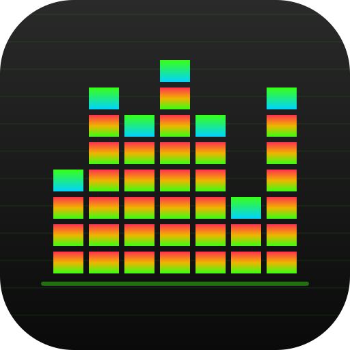

Classic player look in the browser, via the Webamp library by Jordan Eldredge / captbaritone, which re-implements the Winamp 2 player. Installable on Android: launch from home screen, rotate, full screen.
Not officially affiliated with Winamp or Llama Group SA. „Winamp" is a registered trademark — used here only descriptively (Webamp re-implements the Winamp 2 look).
Webamp library by Jordan Eldredge (captbaritone).